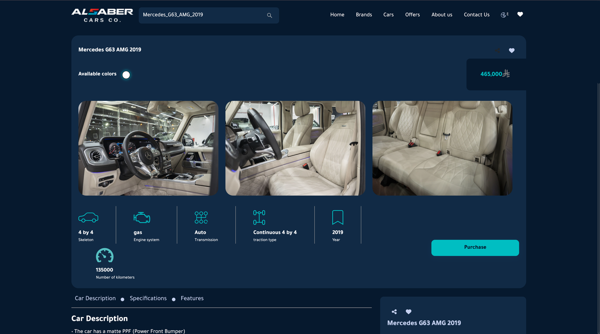
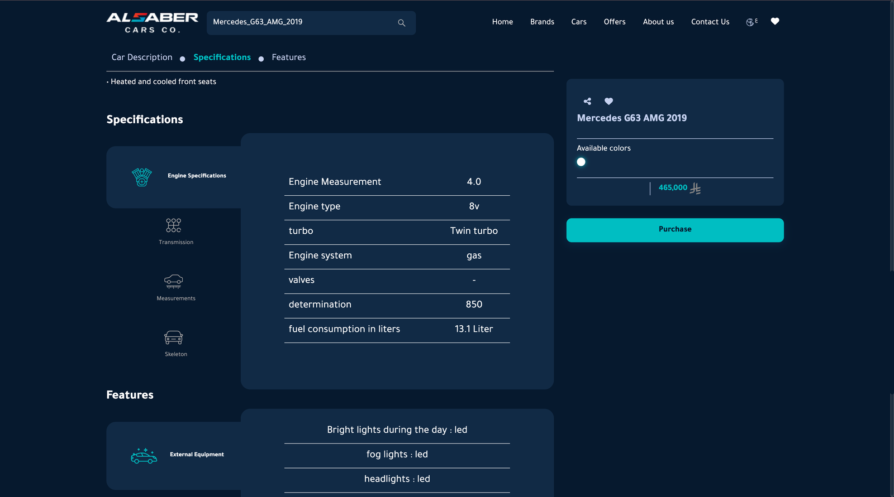
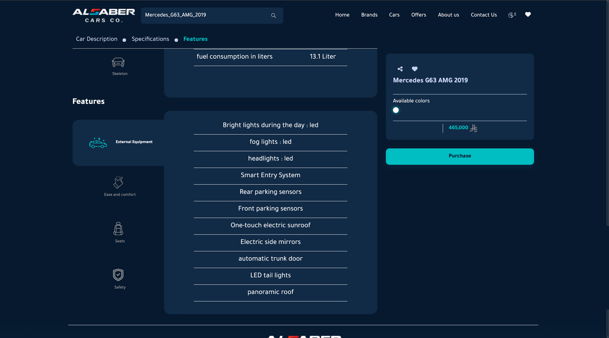
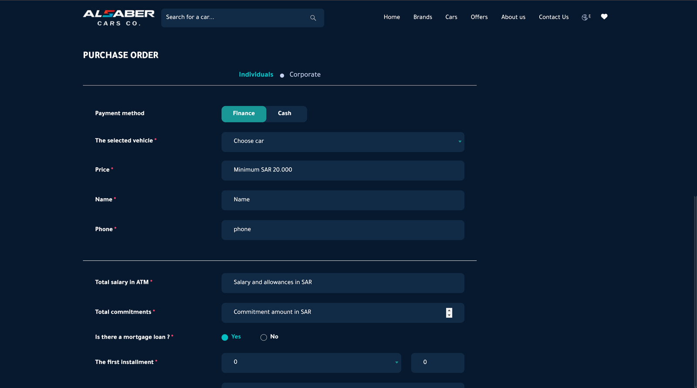
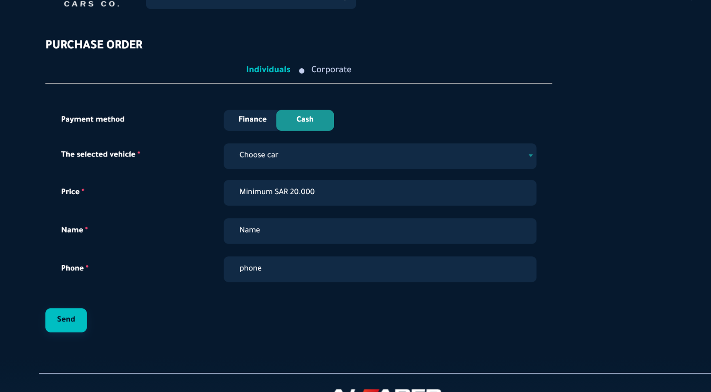
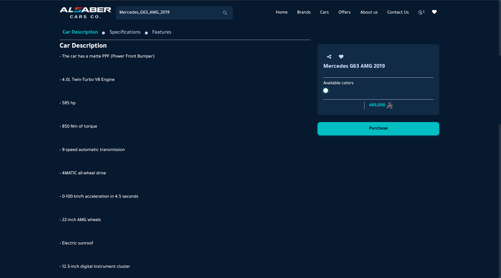
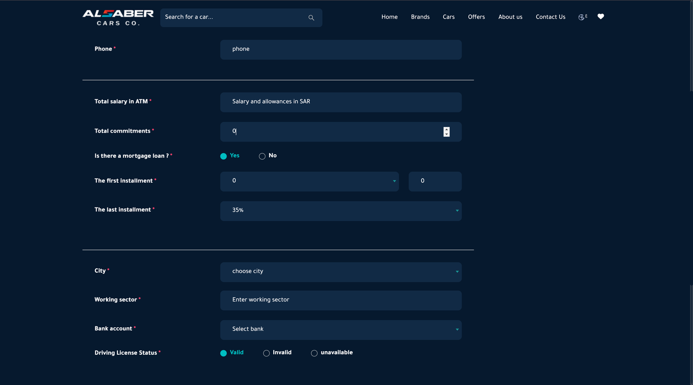

AUDIT — alsabercars.comDATE — 8 JULY 2026BY — CODE-OX
Website Analysis Report · Full Diagnostic
The showroom is world-class. The website is losing its buyers.
The inventory spans Rolls-Royce, Ferrari and Lamborghini. The website carrying it takes nearly a minute to show a car on mobile, is invisible to Google, and answers a buyer's interest with a salary form. This audit documents 47 verifiable findings — each one specific, measurable, and fixable.
Audit Date8 July 2026Websitealsabercars.comMethodGoogle PageSpeed · Technical crawl · Full UX walkthroughBenchmarksRolls-Royce · Ferrari · Porsche digital standards
01 · The Four Numbers That Matter
Before any detail — read these.
Four measurements from Google's own tools. Each one, alone, is enough to explain why the website produces no enquiries.
57.5s
To show the first car
Google's standard: 2.5 s. This is 23× over.
34MB
Homepage download
17× an average page — "enormous," in Google's words.
0
Words in Google results
The meta description is an empty string.
55/100
Google performance score
Desktop scores 54 — the site, not the network.
Eight issues that need fixing first
Homepage downloads 34 MB — Google calls it "enormous"
Car detail page has 1 photo and a 2-word description
First car takes 57.5 s to appear (Google's limit: 2.5 s)
No WhatsApp, no call button — only a salary form
Meta description is empty — zero words in Google results
G63 AMG 465k SAR listed alongside 180k family SUVs
No sitemap — new inventory is invisible to Google
125 of 126 images invisible to Google (no alt text)
Material damage to brand perception, conversion, or discoverability.
11 Medium
Quality and polish gaps that compound the larger issues.
1 Low
A symptom that independently confirms the diagnosis.
Every finding in this report is specific, verifiable, and fixable — documented with Google PageSpeed evidence, a full technical crawl, and a manual walkthrough of the customer journey on desktop and mobile.
03 · Category Health
Five areas, one verdict each.
Performance & Speed
Failing
Site takes up to 57.5 s to load. Most mobile visitors leave before seeing a car.
2 Critical4 High2 Medium
Design & Brand
Failing
Generic template — no Al Saber identity. Luxury cars shown with interior shots first, raw database labels in specs.
2 Critical5 High2 Medium
Conversion & Journey
Failing
No WhatsApp. Purchase form asks for salary before a salesperson speaks. No breadcrumbs. Form switches to English mid-journey.
3 Critical9 High5 Medium
Search & Visibility
Failing
Empty meta description. No sitemap. No structured data. Two live domain copies split every ranking signal. The English version cannot be indexed.
4 Critical5 High
Security, Accessibility & Quality
Failing
Zero security headers and a jQuery version with published vulnerabilities — on a form collecting salary and bank data. Accessibility 82 with unnamed controls and contrast failures. Traffic too low for Google to even measure Core Web Vitals.
1 Critical2 Medium1 Low
04 · Measured Evidence · Google PageSpeed · 8 July 2026
Google's own numbers, unedited.
55 / 54
Performance Mobile / Desktop
Desktop lower than mobile — proves it's the site, not the network
82
Accessibility
Unnamed buttons, contrast failures, touch targets too small
92
Best Practices
Passes basics — flags low-res images and wrong aspect ratios
92
SEO (lab only)
Lab check only — does not reflect real search visibility (see findings 35–43)
Metric
Mobile
Desktop
Google "Good"
What a visitor experiences
First Contentful Paint
9.4 s
1.9 s
≤ 1.8 s
Blank screen on mobile for over 9 seconds
Largest Contentful Paint
57.5 s
9.2 s
≤ 2.5 s
Hero car image: nearly a minute on mobile, 4× limit on desktop
Speed Index
19.5 s
4.6 s
≤ 3.4 s
Page visually incomplete for ~20 seconds on mobile
Total Blocking Time
80 ms
180 ms
≤ 200 ms
Within range — the problem is weight, not scripting
Cumulative Layout Shift
0.015
0.005
≤ 0.1
Layout is stable once loaded — but that takes too long
Notable: Google's real-user Core Web Vitals shows "Not applicable" — the site has too little traffic for Google to even compile field data. The performance and visibility problems compound each other.
05 · Findings 1 – 8 · Performance & Delivery
Nobody waits a minute for a Rolls-Royce.
A first visit costs 34 MB and nearly a minute of waiting — most mobile visitors are gone before a single car is on screen.
2 Critical4 High2 Medium
0134 MB download
The Homepage Downloads 34 MB — 17× the Size of an Average Web Page
PageSpeed measured the total network payload at 34,252 KiB — flagged as an "enormous network payload." The median web page is roughly 2 MB. Every first-time visitor arriving from Instagram, a WhatsApp link, or a Google ad must download the equivalent of a short video before the page completes. On mobile data, that is a real cost in both time and money at the exact moment the site should be making a first impression.
0257.5 s to render
The First Car a Visitor Sees Takes 57.5 Seconds to Render
Largest Contentful Paint measured 57.5 seconds on Google's standard mobile conditions, against a 2.5-second "good" threshold. The hero slider loads multi-megapixel PNG cut-outs through a secondary slider domain — they are the last thing to arrive. In practice, the visitors this site most needs to impress will never wait to see the Rolls-Royce.
039 s blank screen
Nine Seconds of Blank Screen Before Anything Appears
First Contentful Paint: 9.4 s (threshold 1.8 s). Speed Index: 19.5 s (threshold 3.4 s). The majority of mobile visitors abandon a page that shows nothing within ~3 seconds. These visitors register as zero in any analytics — consistent with the "no conversions from the website" experience.
049 s delay
Render-Blocking Resources Add an Estimated 9 Seconds of Delay
PageSpeed identified render-blocking requests with an estimated savings of 8,980 ms — CSS and JavaScript files (Bootstrap, slider libraries, font packs) that must fully download before the browser can draw anything. This is the direct cause of the blank screen in finding 3. Fixable through standard deferral and critical-CSS techniques without changing the visual design.
0517 MB waste
Images Served Unoptimised — 17 MB of Identified Waste
The image delivery audit found 17,126 KiB of potential savings. Car photos are full-resolution PNGs with no modern formats (WebP/AVIF), no responsive sizing, and no lazy-loading. For an inventory site whose product is photography, the image pipeline is core infrastructure — this is the single largest fixable contributor to the 34 MB payload.
0626 MB re-downloaded
No Effective Caching — Returning Visitors Re-download 26 MB Every Visit
PageSpeed flagged inefficient cache lifetimes on 26,670 KiB of assets. A visitor who browses from homepage to a car page and back re-downloads nearly the entire payload. Serious buyers visit a dealer's site repeatedly while deciding — every return visit is as slow as the first.
07~900 KiB unused
~900 KiB of Unused and Unminified Code From a Heavy Library Stack
311 KiB unused CSS, 399 KiB unused JavaScript, 213 KiB unminified files. The site loads jQuery, Bootstrap, RevSlider, Slick, Select2, SweetAlert2, and Font Awesome simultaneously — a 2015-era template stack where each library ships far more code than the site uses.
08Layout jump risk
Images Declared Without Dimensions — Layout Jump Risk When Speed Improves
Image elements lack explicit width and height attributes, forcing the browser to recalculate layout as each image arrives. Layout shift is currently low (0.015) only because images arrive so late. Fixing speed without fixing dimensions will surface visible content-jumping on a faster site.
06 · Findings 9 – 17 · Design & Brand
A template wearing a luxury inventory.
Generic components carry a Rolls-Royce collection; nothing on screen is ownably Al Saber, and the flagship cars are presented below the standard their own manufacturers set.
2 Critical5 High2 Medium
09Cut-out on grey
Flagship Cars Presented as PNG Cut-Outs on Grey Rectangles, Headlines Cropped
The hero slider presents the Rolls-Royce Spectre and Ferrari Purosangue as flat PNG cut-outs floating on grey shapes, with display headlines ("SPECTRE", "FERRARI") partially cropped at the screen edge on both desktop and mobile. These marques whose manufacturers spend millions on presentation standards — the gap between manufacturer and dealer presentation is felt instantly, and it reprices the dealership downward in the buyer's mind.
10465k next to 180k
Luxury and Economy Inventory Share One Undifferentiated Grid
A Mercedes G63 AMG at 465,000 SAR sits in the same card format, same stream, directly beside a 180,000 SAR family SUV. The premium buyer reads "trader, not curator" — the digital equivalent of parking the Phantom in a general used-car lot. Two audiences need two presentation experiences; currently there is one, calibrated to neither.
1160+ identical tiles
60+ Identical Brand Logo Tiles Dominate the Homepage With No Hierarchy
The homepage's largest section is a uniform grid of 60+ grey tiles — Ferrari next to Isuzu next to Dongfeng, all equal weight. It communicates breadth at the cost of positioning: the page reads like a parts catalogue. Breadth is a real business strength, but it needs hierarchy — marquee brands as a curated collection, volume brands as a searchable capability.
12No brand identity
The Site's Visual Identity Does Not Carry the Al Saber Brand
The site is built on generic template components — stock Bootstrap layouts, default component styling, system-grade typography — with the Al Saber logo placed on top rather than an identity built from it. Nothing in the colour system, type, or graphic language is ownable. A returning visitor would not identify a screenshot of this site as Al Saber without reading the header.
13Watermarked warehouse
Primary Car Photography Is Watermarked Warehouse Shots
Listing and detail images are single photographs from the warehouse/showroom with a logo watermark across them. Watermarks signal fear of theft, not pride of presentation, and warehouse backdrops undercut cars photographed by their manufacturers in studios. A consistent photography standard — even a branded backdrop corner of the showroom — would transform perceived quality at near-zero cost.
140 real image tags
All 18 Gallery Photos Are CSS Backgrounds, Not Images — Invisible to Google, No Alt Text Possible
During this audit the G63 AMG gallery was refreshed — 18 photos, exterior-first, uploaded the morning of 8 July 2026 — a genuine improvement worth crediting. The structural issue remains: every gallery photo renders as a div with a CSS background-image inside the carousel, not as an <img> element. Background images cannot carry alt text, are excluded from Google Images, cannot be opened, zoomed, or saved, and are invisible to screen readers. The best photography on the site is locked inside markup that neither Google nor assistive technology can see.

Evidence — findings 14 & 15: captured 8 July 2026, hours before the gallery refresh — the presentation mechanics shown (equal tiles, no full-width hero, no lightbox) are unchanged in the refreshed 18-photo gallery.
153-up tiles, no lightbox
18 Photos Squeezed Into Three-Tile Carousel Slots — No Full-Width Hero, No Lightbox
Even after the gallery refresh, the presentation is a three-up carousel: each photo occupies roughly one-third of the content column, with no full-width hero shot, no lightbox or zoom, and no photo-count indicator telling the buyer that 18 photos exist at all. Competitors on syarah.com and motory.sa present full-screen galleries with visible counts. The carousel communicates "tiles to flick through"; the competitor communicates "nothing to hide." At 465,000 SAR, the difference in buyer confidence is material.
The G63 AMG Specifications section shows labels exactly as stored in the database: "Engine Measurement: 4.0", "Engine type: 8v", "Engine system: gas", "valves: –", "determination: 850." The label "determination" is a machine-translated fragment meaning nothing to any buyer; "8v" is an internal code for V8; "valves: –" is an empty cell. A serious technical buyer cross-referencing the official Mercedes-AMG spec sheet concludes this data cannot be trusted — and that concern extends to every other listing on the site.

Evidence — finding 16: the live Specifications table — "Engine type: 8v", "valves: –", "determination: 850" — raw system output on the page where a buyer verifies a six-figure car.
17Raw colon syntax
Features Table Uses Raw Colon Syntax and Inconsistent Capitalisation Throughout
The Features section presents: "fog lights : led", "headlights : led", "Bright lights during the day : led" — a colon-separated database output with no editorial pass. Capitalisation is arbitrary, and the colon-plus-space pattern reads as unprocessed system output. On a page where a buyer is forming a price-to-specification assessment, unformatted data erodes the sense that the dealership checks and stands behind its own listings.

Evidence — finding 17: the Features section as rendered — "fog lights : led", "Bright lights during the day : led" — colon-separated database entries with no editorial pass.
The journey's most valuable moments — the detail page and the enquiry — are exactly where the site loses its buyers. This is the category that converts directly into revenue when fixed.
3 Critical9 High5 Medium
181 photo · 2-word desc
The Car Detail Page — the Decision Moment — Is Nearly Empty
The page where a buyer decides whether to act contains: one watermarked photo, a specification icon row, and a description that is literally two words ("بورش تارجا" on the Porsche Targa GTS page). No gallery, no video, no interior shots, no condition report, no story. This is the most valuable page type on the site and currently its weakest — every upstream spend on ads, social, and search pays to deliver visitors to a page that cannot close.
19Data sheet, not a car
Even the Best-Stocked Detail Pages Read as an Inventory Export, Not a Desire Machine
Where a car has fuller content — the G63 AMG carries 18 photos and a long spec list — the presentation is still a flat data sheet: small tiles, plain bullets, and raw label/value tables (see findings 16, 17). No full-width gallery, no exterior/interior hierarchy, no separation of what makes this car desirable (585 hp, matte PPF, Burmester sound) from routine line items. A 465,000 SAR car deserves a page that builds desire the way the manufacturer's configurator does.
20No WhatsApp · No call
No WhatsApp, Call, or Book-a-Viewing Action Exists on Car Pages
The only action on a car page is a single "شراء" (Buy) button. In the Saudi market, WhatsApp is the default channel for car enquiries — its absence from the exact page where desire peaks forces interested buyers to hunt for contact details or leave. A car page should offer the full ladder: WhatsApp this car, call now, book a private viewing, request more photos. Each missing rung is a measurable leak of ready buyers.
21Salary before hello
"Purchase" Opens a Financial Interrogation — Salary, Commitments, Mortgage — Before Any Contact
Clicking the sole CTA opens a Purchase Order page whose Finance path requires: total salary, total financial commitments, mortgage status, first/last installment amounts, city, working sector, bank account, and driving license status — before anyone from Al Saber has spoken to the buyer. No buyer discloses salary and debts to a website to express interest in a car. Replace "Purchase" with "Request a Callback" — name, phone, the car — as the Cash path already nearly demonstrates. Every field beyond that is measurable lead leakage, and this is very plausibly the single largest conversion blocker on the site.

Evidence — finding 21: the first screen after clicking "Purchase" — total salary, total commitments, and mortgage status demanded before any human contact. Note also the ambiguous required "Price" field (finding 30).

The contrast: the same form's Cash path — vehicle, price, name, phone, Send. The minimal lead-first version already exists on the site; it simply is not the default journey.
22No calculator · No trade-in
No Financing Calculator or Trade-In Path Anywhere on the Site
No monthly-payment calculator, no bank financing information, and no trade-in valuation journey exist on the site. For the volume inventory (MG, Elantra, family SUVs), financing is how the majority of Saudi buyers purchase and "what would this cost monthly?" is the first question. For the premium side, trade-in is often the door-opener. Both journeys are absent.
23Sold = dead end
Sold Cars Dead-End the Visitor Instead of Redirecting Their Declared Interest
Sold vehicles remain browsable (the Porsche Targa GTS carries a "مباع" badge) but offer no next step — no "similar cars available," no "notify me when a comparable car arrives," no enquiry option. A visitor on a sold-car page has declared exactly what they want. The current page wastes that declaration. This is among the cheapest conversion wins on the list.
24No lead capture
No Lead Capture Exists for the Majority of Visitors Who Are Not Ready to Buy Today
No stock alerts ("tell me when a GLE arrives"), no price-drop notifications, no saved-cars account, no newsletter, no callback request. The site converts only visitors ready to press "Buy" this moment — the smallest slice of its traffic — and loses the identity of everyone else entirely.
25Full screen · Nothing to do
On Mobile the Hero Slider Fills the Entire First Screen — No Inventory, No Search Visible
On a phone — where the majority of Saudi traffic arrives — the first full screen is the slider: a cut-out car, a long paragraph, and slider dots. No inventory, no search, no action is visible without scrolling. Combined with finding 3 (9 seconds blank screen), the mobile first impression is a long wait followed by a screen that offers nothing to do.
26No breadcrumbs
No Breadcrumbs or Wayfinding — Visitors Cannot Orient Themselves or Find Similar Cars
The car detail page carries no breadcrumb trail and no contextual navigation. The URL encodes the path (/car/1045/Mercedes_G63_AMG_2019) but the page shows only the car name — no "Cars > Luxury > Mercedes" hierarchy, no back-to-results link, no category context. A buyer arriving from WhatsApp, Google, or Instagram has no visible route to the broader inventory and no way to see what else is available at a comparable price point. In a session where comparison is the primary behaviour, no wayfinding is a dead end dressed as a destination.
27Price · No context
The Price Is a Bare Number — No Monthly Estimate, No Financing Qualifier
The sidebar displays "465,000 ر.س" with no monthly-payment estimate, no "from X SAR/month" qualifier, and no indication of whether the price is fixed or negotiable. Every major automotive platform — motory.sa, syarah.com — shows an estimated monthly payment alongside list price because buyers think in monthly cash-flow terms, not lump sums. The finance form proves Al Saber offers financing — that information belongs next to the price, not buried behind a ten-field application.
28Sidebar adds nothing
The Sticky Sidebar Repeats the Above-Fold Content Word-for-Word — No Added Value
The sticky sidebar shows: car name, colour swatch, price, Purchase button — the exact same four elements already visible above the fold. As the user reads Specifications and Features, the sidebar adds no contextual value — no "add to compare," no spec callout, no seller note. A sticky element earns its space only if it adds something the scrolled-away section cannot. As implemented, it competes for reading width without earning it.

Evidence — findings 19 & 28: mid-scroll on the G63 page — plain bullet output on the left, and a sticky sidebar repeating the exact four elements already seen above the fold.
29Car not pre-filled
The Purchase Form Does Not Pre-Fill the Car Being Enquired About — Buyer Must Re-Select
The "Purchase" button links to a URL carrying ?car_name=Mercedes_G63_AMG_2019, yet the Purchase Order form arrives with "Choose car" — an empty dropdown. The URL context is discarded at the form boundary. A buyer who clicked "Purchase" on a specific car should never be asked to re-select it — re-selection creates doubt ("is this for the right car?"), adds friction, and risks an incorrect vehicle being selected. This is a direct technical failure at the most consequential step in the user journey.
30"Minimum SAR 20.000" — what?
The "Price" Field Placeholder "Minimum SAR 20.000" Is Actively Ambiguous on a 465,000 SAR Listing
The Purchase Order form's required "Price" field shows the placeholder "Minimum SAR 20.000." It is not clear whether the buyer should enter: (a) the vehicle's listed price, (b) a price they wish to pay, or (c) a down payment. A buyer from a 465,000 SAR listing typing "465000" may be wrong; typing "20000" equally so. The vehicle selector dropdown implies the system knows the price — yet asks the buyer to type it manually. This is a trust-breaking ambiguity on the one page that must feel certain.
31Stepper on salary field
"Total Commitments" Uses a Numeric Stepper — Wrong Control for a SAR Financial Field
The Finance form's "Total commitments" field — expecting a monthly SAR obligation like "3,500" or "12,000" — has a numeric increment/decrement spinner. A stepper suits quantities like "number of installments." For a financial amount, a buyer would need to click the up arrow thousands of times to reach their figure. The control signals the form was assembled without reviewing what each field actually collects.
32No progress indicator
No Progress Indicator on a Multi-Screen Finance Form — Buyers Don't Know How Much Remains
The Finance path spans at least two full viewport heights — salary, commitments, mortgage, installments, city, sector, bank, driving license — with no step indicator, no section headings, no progress bar. A buyer who completes the first screen of fields and finds a second wave of equally demanding questions has no information about how much remains. Research consistently shows progress indicators increase form completion rates; sensitive financial forms without them suffer the highest mid-way abandonment.

Evidence — findings 32 & 33: the second wave of the Finance form — installments, city, working sector, bank account, driving license — with no progress indication. English session shown, as captured in the walkthrough; note the "Working sector" and "Driving License Status" translations.
33"Salary in ATM"
The English Purchase Form Mistranslates Its Most Sensitive Fields — "Total salary in ATM"
The form follows the visitor's session language: a fresh visit renders it in Arabic, but any buyer who has used the header's EN switch — precisely the international buyer the luxury inventory targets — reaches the English version, where the most sensitive questions are mistranslated: "Total salary in ATM," "Working sector," "Driving License Status." "Salary in ATM" is not natural English for take-home salary; at the exact moment trust is most needed, the copy signals that the form was never reviewed by an English speaker. The walkthrough screenshots in this report show this English session.
34Heart with no account
The Favourites/Save Affordance Has No Persistent Account Behind It
The detail page shows a heart icon (favourites) in the sidebar. For a buyer comparing multiple cars across sessions — routine at this price level — the expectation is a retrievable saved list. No sign-in link, no "saved cars" section, and no account system is visible anywhere in the navigation. The affordance makes a promise the site cannot keep. A saved car that disappears when the browser closes weakens trust at exactly the consideration stage.
Structurally invisible: to Google, to Google Images, to WhatsApp link previews, and to every English-speaking luxury buyer in the Kingdom.
4 Critical5 High
35Empty meta description
The Meta Description Is an Empty String — Zero Words Shown Under the Site in Google
The homepage ships <meta name="description" content=""> — the tag exists and is empty. The text Google shows below a site's name in search results is the highest-leverage copy on the web, and it is currently blank. PageSpeed's own SEO audit flags it directly. Every page on the site shares this condition.
36No H1 · No keywords
No H1 Heading Exists, and the Title Tag Carries Zero Car-Related Keywords
The homepage has no H1, and its title tag reads "السبر | الرئيسية" — no "cars," no "luxury," no city, no brand names. Google's two strongest on-page relevance signals are the title and H1; the site provides one empty of meaning and the other not at all. Searches like "معارض سيارات فاخرة الرياض" have no reason to surface this site.
37sitemap.xml → 404
No Sitemap Exists — and robots.txt Gives Google No Map Either
Checked live: /sitemap.xml returns 404 (rendering a default English framework error page), and /robots.txt — while present — is a two-line allow-all with no Sitemap: directive, so it gives crawlers no guidance at all. A sitemap tells Google "here are my 200 cars, and this one arrived today." Without it, new inventory is discovered only by chance. For a business whose product rotates weekly, this structurally disconnects every new listing from search.
38125 / 126 no alt text
125 of 126 Images Have No Alt Text — the Entire Inventory Is Invisible to Google Images
Every car and brand image carries an empty or missing alt attribute. Google Images is a major discovery channel for car shoppers ("G63 2019 black") and the entire inventory is excluded from it. The alt gap also contributes to the accessibility failures in finding 44 and wastes the image-heavy nature of the site entirely.
39Zero structured data
Zero Structured Data — No Car Can Appear as a Rich Result in Search
No JSON-LD or microdata exists: no Vehicle, no AutoDealer, no Offer markup. Structured data is what lets Google show a car with its price, year, and mileage directly in results and what feeds "car dealer near me" surfaces. Competitors with marked-up inventory occupy this space unchallenged.
40WhatsApp share = bare URL
Zero Open Graph Tags — Every Shared Car Link Arrives on WhatsApp as a Bare URL
No Open Graph or Twitter Card tags exist. When anyone shares a car on WhatsApp — the primary way cars circulate socially in the Kingdom — the message shows a naked link with no photo, no name, no price. Every organic share, the cheapest marketing the dealership can get, arrives stripped of its selling power. For a luxury car business this may be the single most costly small gap on the list.
41EN invisible to Google
The English Version Exists Only Inside a Session — Google Can Never Index It
An English version exists behind the header's EN switch — but switching simply redirects back to the same URL and stores the language in a session cookie, so the identical URL serves both languages. With zero hreflang tags and zero canonical tags on every page checked, search engines have no way to discover, crawl, or rank the English catalogue. Searches like "Rolls Royce for sale Riyadh" or "Ferrari dealer Saudi Arabia" still cannot land here — the English-speaking luxury market remains structurally excluded even though the translation work already exists.
42HTTP 406
The Server Rejects Non-Browser Clients With HTTP 406 — Crawlers Partially Blocked
Direct HTTP requests without full browser headers receive a 406 "Not Acceptable" response. Standard browsers work, but this can silently block or degrade SEO tools, link-preview bots, and monitoring services. Combined with the empty crawl guidance in finding 37, the site's relationship with automated clients — which is what search engines are — is unmanaged and partially hostile.
43Two live hosts
www and Non-www Serve Two Complete Copies of the Site — Ranking Signals Split in Half
https://www.alsabercars.com and https://alsabercars.com both return the full site with no redirect between them and no canonical tag on either. Google treats these as two separate sites publishing identical content — every link, share, and ranking signal is divided between them. The site's own markup mixes the two: navigation links point at www while assets and some car links use the bare domain. A one-line permanent redirect plus canonical tags consolidates the signal.
Security hardening that a salary-collecting form deserves, quality gaps that exclude some users — and one number that quietly confirms the whole diagnosis.
PageSpeed flags buttons without accessible names, links without discernible text, foreground/background contrast failures, touch targets below minimum size, no main landmark, and heading levels out of order. Beyond users it excludes, these cause mis-taps and hard-to-read text for every mobile user — and unnamed links are equally unreadable to Google crawlers.
45Blurred on retina screens
Images Served at Low Resolution and Wrong Aspect Ratios — Blurred on Modern Devices
The Best Practices audit flags images displayed at incorrect aspect ratios and served below the resolution of the screens displaying them. On modern phones or retina displays, photographs of six-figure cars render slightly stretched or blurred. Paradoxically, the site is both too heavy (34 MB) and too low-quality where it counts — the worst of both trades.
460 security headers
No Security Headers and a Vulnerable jQuery — on a Form That Asks for Salary and Bank Details
The server responds without any of the standard protective headers — no Strict-Transport-Security, no Content-Security-Policy, no X-Frame-Options, no X-Content-Type-Options — and the pages run jQuery 3.3.0, a version with published cross-site-scripting vulnerabilities (CVE-2020-11022 / CVE-2020-11023). On most sites this is routine hardening work; here it matters more, because the purchase form collects salary, commitments, and bank details. HTTPS itself is correctly enforced and the session cookie is HttpOnly — the foundation is in place; the protective layer above it is missing.
47No CWV data
Google Has Too Little Traffic Data to Even Assess the Site's Real-World Performance
The Core Web Vitals field assessment returns "Not applicable" — the site does not receive enough real-user traffic for Google's Chrome UX Report to compile data. Low severity only because it is a symptom, not a cause: it independently confirms that the visibility problems in findings 35–43 translate into a traffic level below Google's measurement floor.
The Bottom Line
47 findings, one story: the cars deserve a website that works as hard as the showroom does. Every issue in this report is specific, verifiable, and fixable.